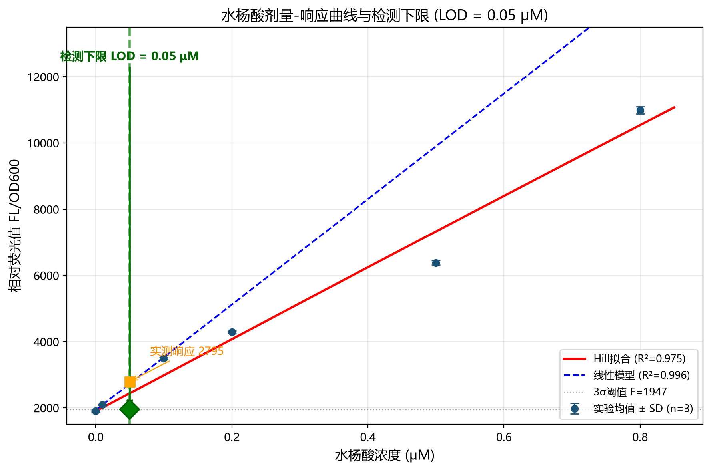

Salicylic‑Acid Biosensor Modeling
We established Hill full‑range dose‑response model and low‑concentration linear calibration for NahR‑Psal biosensor. LOD and LOQ were calculated under IUPAC 3σ criterion, providing quantitative benchmark and engineering guidance for wet‑lab biosensor characterization.

Background
Our sensing strain MUT3rd uses salicylic acid to activate the Psal promoter and drive GFP reporter expression. Fluorescence intensity serves as measurable readout correlated with extracellular salicylic‑acid concentration, which is the key intermediate metabolite during PAHs biodegradation.
This quantitative dry‑lab model solves two core practical problems: first, build mathematical relationship between salicylic‑acid concentration and fluorescence output; second, compute biosensor limit‑of‑detection (LOD), quantitatively characterize the analytical performance of our genetic whole‑cell biosensor.
Model Design & Assumptions
Mathematical framework
We adopted dual‑model strategy for biosensor characterization: Hill equation for full‑range sigmoidal dose‑response fitting; low‑concentration linear regression as engineering calibration curve for LOD calculation.
1. Full‑range Hill dose‑response model:
\[ F(C)=\alpha_0+\alpha_{\mathrm{max}} \cdot \frac{C^n}{K_M^n + C^n} \]2. Low‑concentration linear calibration model (0‑0.1 μM):
\[ F = S\cdot C + b \]3. Concentration inversion formula from measured fluorescence:
\[ C=\frac{F-b}{S} \]Simplifying assumptions & rationale
- Biosensor reaches steady‑state: fluorescence signal stops changing over incubation time, guaranteed by fixed wet‑lab incubation protocol.
- Linear approximation holds under low salicylic‑acid concentration; experimental data shows good linear correlation within 0‑0.1 μM.
- Background noise follows Gaussian distribution, IUPAC standard 3‑σ statistical rule is applicable.
- Signal higher than \(F_{\mathrm{blank}}+3\sigma_{\mathrm{bg}}\) is defined as detectable positive signal, standard biosensor LOD judging rule.
Model Implementation & Parameters
Code implementation
Model fitting was completed in Python 3.13 with scipy library. Non‑linear least‑square algorithm was used for Hill equation fitting. Experimental dataset includes 7 salicylic‑acid concentration points (0‑0.8 μM), each with three biological replicates.
Parameter source & calibration
All model parameters are directly fitted and calibrated from wet‑lab experimental measurement data.
| Parameter | Symbol | Estimated value | Biological meaning |
|---|---|---|---|
| Blank fluorescence mean | \(F_{\mathrm{blank}}\) | 1897 | Average fluorescence of blank control |
| Background standard deviation | \(\sigma_{\mathrm{bg}}\) | 16.70 | Fluorescence noise standard deviation of blank |
| Linear slope | \(S\) | 15926.34 | Signal gain under low‑concentration linear region |
| Linear intercept | \(b\) | 1933.53 | Intercept term for low‑concentration calibration |
Model Results & Validation
Fitting performance
Hill full‑range model: \(R^2=0.9755\). Hill coefficient \(n \approx 1.00\), indicating nearly non‑cooperative binding between salicylic acid and NahR protein. Low‑concentration linear regression (0‑0.1 μM): \(R^2=0.9957\), showing excellent linearity in weak‑signal region.

Performance metrics calculated by IUPAC 3σ rule:
• Practical experimental LOD = \(0.05\ \mu M\), signal at LOD is 45 % higher than 3σ threshold, stably detectable in wet‑lab;
• Theoretical sensitivity (3σ/slope): \(3.15\ \mathrm{nM}\);
• Limit of quantitation LOQ = \(10.49\ \mathrm{nM}\).
Limitations
- Experimental dataset does not reach signal saturation region; fitted \(F_{\mathrm{max}}\) and \(EC_{50}\) from Hill model are extrapolated values.
- Only three replicates for blank fluorescence measurement, leading to relatively wide confidence interval for estimated LOD.
Model Application & Significance
1. Guidance for wet‑lab optimization: Three tunable core parameters determine LOD performance: NahR‑salicylic‑acid binding affinity \(K_M\), basal leakage \(\alpha_0\), signal gain slope \(S\). Three engineering strategies are proposed: decrease \(K_M\) for higher affinity; reduce basal background leakage; improve signal gain slope to enhance weak‑signal distinguishability.
2. Concentration inversion for unknown samples: The linear calibration formula calculates salicylic‑acid concentration directly from measured fluorescence. The model also judges whether data falls within valid linear window (0‑0.1 μM) to avoid extrapolation error.
3. Project‑level contribution: Delivered quantitative performance benchmarks (practical LOD, theoretical sensitivity, LOQ) for our NahR‑Psal biosensor, supporting wiki content, presentation and biosensor design. It points out clear follow‑up experimental directions: collect saturation‑range data and increase blank replicates to narrow confidence interval, reducing blind trial‑and‑error cost.